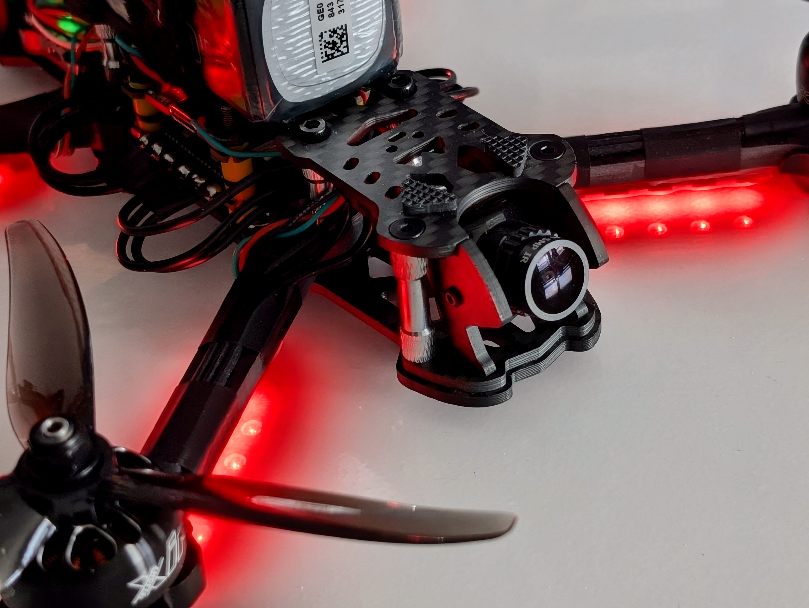
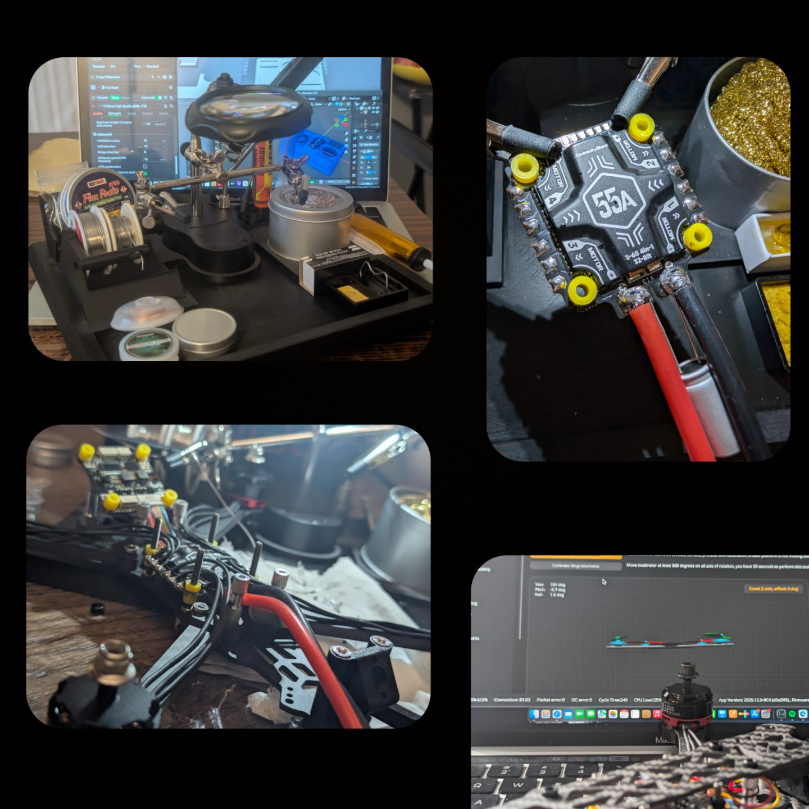
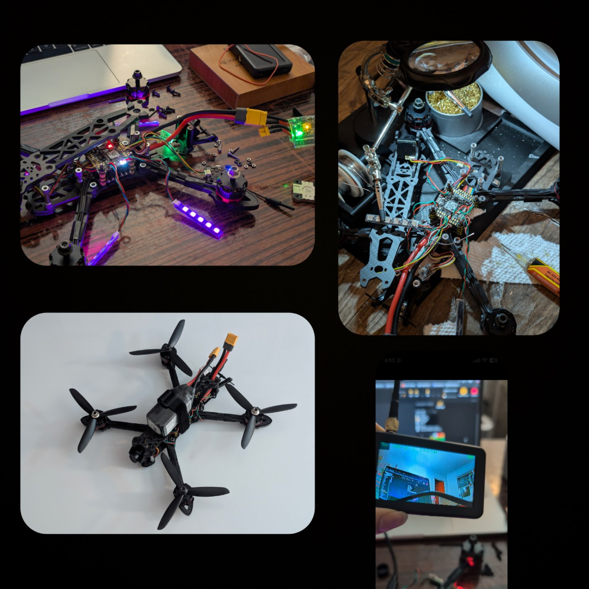
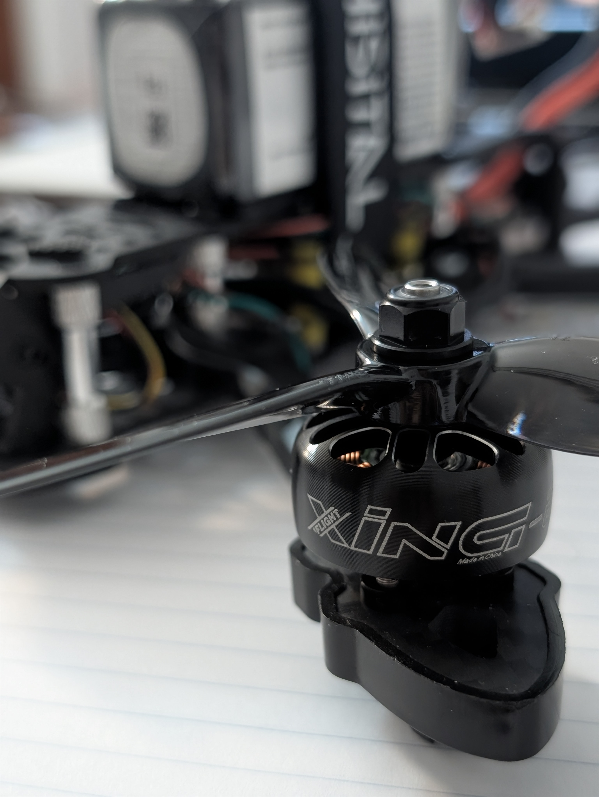
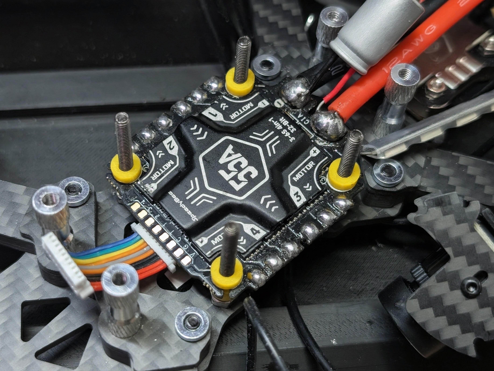

FPV Drone

Solo Project. 5" FPV Drone. In this era, drones have become a critical tool not only for warfare but also for regular commercial & non-commercial tasks. These include photoshoots, advertisements, racing, and watering crops. Developing the skills of an FPV pilot may prove worthwhile in the near future.
Design Process
October to December were spent planning and preparing for the layout, parts, and purpose. A 2.5" and whoop drone felt too weak, so a 5" frame was chosen. Originally, the purpose was to create a drone cheaper than premade ones. Thus, sites such as AliExpress were prioritized. Low-budget items included the frame, propellers, camera, motor (Regrettable), and radio. and LEDs. High-budget items included the LiPo battery, FC + ESC stack, VTX, and receiver. December to January was spent assembling. March was spent debugging and finalizing.
Specifications
- Duration: Oct 2025 - Mar 2026
- Material: Carbon Fiber
- Cost: ~ $400
Outcome
Motors are not something to be cheaped out on. It easily became one of the more expensive parts on my list. Cheap motors simply caused the motors to stutter during startup. And FPV Drones are much different than premade drones such as those from DJI.

Initial Draft
Assembling this drone was similar to making your own pc. Except soldering dominated over connectors. Simply because a pc is static while a drone is dynamic. Because my environment lacked a proper workstation, I modeled my own soldering station in Blender, printed in PLA, to fit the tools bought from AliExpress and Amazon. Brass Wool is a MUST. The solder (HengTianMei) unexpectedly exceeded my expectations tenfold. Because this was my first mass soldering, it took multiple attempts. Connecting the flight controller to BetaFlight worked with no issues.
Continued
Next up was adding the VTX, LEDs and connecting the receiver to my radio (RadioMaster Pocket ELRS). I had trouble mounting the VTX to avoid shorting. Wires on the LEDs were very fragile and had to be handled with caution. Binding the receiver to the radio was a massive hassle. Motors spun perfectly fine without propellers on. With propellers attached, all hell broke loose.


Final Draft
I replaced those cheap motors with Xing E Pro and propellers with new triple-bladed clear props. Stuttering fixed. Though the new problem is flying it. In NYC, drone regulations are strict. Had to obtain a TRUST Cert & Registration to fly in specific parks. However, those parks only allow flying in a certain area owned by an organization demanding costly memberships.
